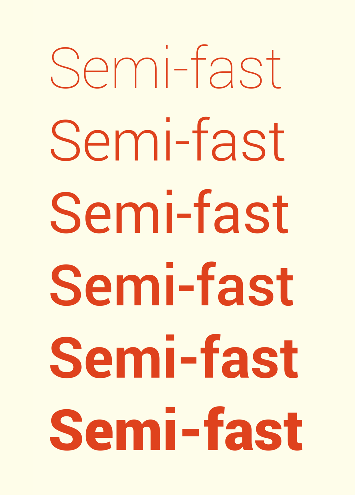

References / Typeface / 321
Roboto
Christian Robertson’s grotesque for Android, redesigned in 2014 to be the voice of Material Design.
- Source
- Wikipedia: Roboto
- Creator
- Christian Robertson for Google
- Made
- 2011; redesigned 2014 (announced 25 June 2014, per Wikipedia)
- Style
- Material Design (agent-proposed, not yet reviewed by a person)
- Moods
- Neutral, clear, systematic
- Evidence
- Opened the Wikimedia Commons weight sample Roboto weights.png by Blythwood (26 December 2014) as a 960 × 1338 rendering on 28 September 2026. The sample has no R, i-dot close-up, or figures, so it does not show which of the two Roboto versions it uses.
- Reviewed
- Rights
- Open license, stored. License: CC-BY-SA-4.0. Rights policy
Context
Christian Robertson designed Roboto in house at Google for Android 4.0 in 2011. On 25 June 2014 Matías Duarte announced at Google I/O that Roboto was redesigned for Android 5.0: dots and punctuation became rounded, the leg of R became straight, and the family became “slightly wider and rounder”. Wikipedia: Roboto.
The family was released under the Apache License, and most variants were later relicensed under the SIL Open Font License. Wikipedia: Roboto.
Observed
- The phrase “Semi-fast” repeats six times in orange-red on a pale cream ground, from a hairline Thin weight to a heavy Black.
- The round letters (S, e, a) have fairly straight sides and open apertures. The a has a small bowl and a straight stem.
- Weights grow evenly. In the Black weight the counters of e and a close to small slits.
Why it belongs
Roboto is neutral enough to disappear into an interface. That fits Material, where hierarchy comes from size, weight, and elevation, not from a characterful font.
Borrow
Use only Regular and Medium for interface text, and Light or Regular for large display lines, as the Material type scale does.
Measured
Machine-extracted by tools/image-traits.py on . Full measurement.
- Mean chroma
- 0.15
- Palette
- #fefdea 86%
- #df421d 8%
- #e1512d 1%
- #fcefdb 1%
- #f2b79e 1%
- #f9e0cb 1%
- #eea085 1%
- #f6ceb7 1%

